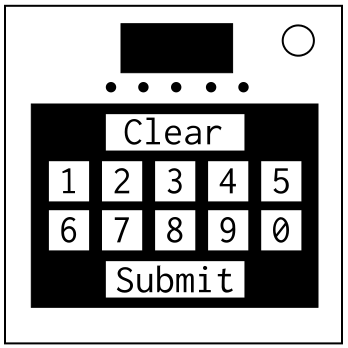

À propos de l'Accumulation
On dirait que quelqu'un a mangé une boîte de couleurs et a vomi sur le module…
- Ce module consiste en un écran et un clavier.
- Le contour du module, son arrière-plan et le clavier seront d'une variété de dix couleurs possibles.
- Les boutons d'annulation et de validation seront respectivement rouge et vert citron.
- Ajouter le nombre de piles, de plaques de ports, d'indicateurs et le nombre associé à la couleur du contour ensemble. C'est le nombre de départ.
- Y ajouter le nombre associé à la couleur de l'arrière-plan et entrer le résultat sur le clavier. Prendre note de la couleur des nombres pressés.
- Entrer le bon nombre fera avancer le module à la prochaine étape.
-
À chaque étape suivante :
- Multiplier le nombre associé à la nouvelle couleur de l'arrière-plan par l'étape actuelle.
- Y ajouter la somme des nombres associés aux couleurs des boutons numérotés entrés lors de l'étape précédente.
- Ajouter ce résultat au nombre entré lors de l'étape précédente et entrer le résultat sur le clavier.
- Si le résultat est supérieur à 999, faites un modulo 1000.
- Entrer un nombre incorrect réinitialisera le module à l'étape 1 et la couleur du contour, et enregistrera une erreur.
- Une fois les 5 étapes effectuées, le module se désamorcera.
| Couleur | Valeur |
|---|---|
| Bleu | 9 |
| Marron | 23 |
| Vert | 4 |
| Gris | 15 |
| Vert citron | 26 |
| Orange | 2 |
| Rose | 8 |
| Rouge | 17 |
| Blanc | 11 |
| Jaune | 10 |